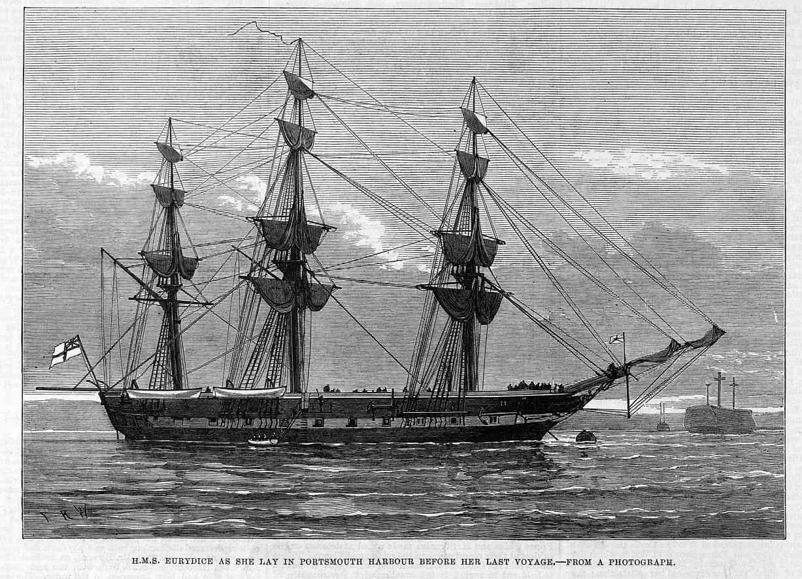
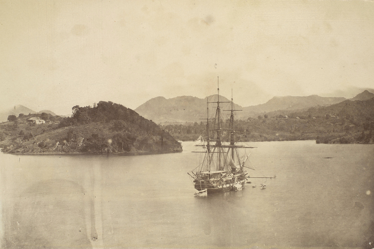

H.M.S. Eurydice, Training Ship#
In 1877, H.M.S. Eurydice was refitted as a training ship. For many years, the fleet had been moving over to armoured steamships and rigged sailing ships were no longer appropriate for modern naval warfare.
One indication of the reduced sailing requirement was the closure of the ropery in Portsmough Dockyard in 1868.
LOCAL AND DISTRICT INTELLIGENCE. - Saturday, May 23rd, 1868
Hampshire Telegraph, 1868-05-23, p. 4
The ropery in the Dockyard at Portsmouth was closed on Saturday last, and the whole of the men have been discharged, with the exception of the master ropemaker and a writer. The master ropemaker is appointed to the ropery in Devonport yard, to supersede the officer of That rank at that establishment. The cause of this particular feature in the dockyard discharge has been brought about in consequence of a determination to manufacture for the future the Government rope in the yards at Chatham and Devonport, where complete arrangements are made for the employment of female labour. These women, we hear, earn from 8s. to 12s. weekly, and every possible care has been taken to provide suitable and becoming accommodation for those who are so engaged. In addition to the number of workmen who have already been discharged from Portsmouth dockyard about 50 joiners and labourers will leave next week; and this batch, according to present arrangements, will bring to a close the extraordinary exodus of artifieers which has recently taken place from this establishment. We inadvertently omitted from the list of members of the Town Council who accompanied the Mayor to London, in support of the appeal on behalf of the discharged ropemakers, the name of Mr. W. H. Dore. The omission was the more to be regretted because Mr. Dore has been from the first one of the most active of those who are interesting themselves in the dockyard discharge.
However, it was still felt that sailors should still be able to handle traditionally rigged vessels and that training ratings on them would be to their benefit as seamen.

Fig. 5 Illustrated London News — H.M.S. Eurydice as she lay in Portsmouth harbour before her last voyage - from a photograph, April 6, 1878#
On the Training of Sailors#
The Eurydice was thus converted over to a training ship in the Spring of 1877, before embarking on a voyage to the West Indies in Autumn 1877.
SEAMANSHIP OF YOUNG SAILORS. - Tuesday, February 6th, 1877
South Wales Daily News, 1877-02-06, p. 5
The Admiralty are about to take practical measures for improving the seamanship of our young sailors. At present a boy having served a certain time on board a training-ship is transferred to a flagship, where he becomes an ordinary seaman. He is then draughted to a sea-going ship, and may, under favourable conditions, become an expert and efficient seaman, knowing the name and use of every rope on board, and capable of turning his hands to anything that may be required in the severest weather. It may happen, however, that he is sent to a ram of Rupert type, or a mastless ship like the Devastation where he can learn little or nothing of his profession; and as vessels of these classes are increasing, and likely to increase, it is necessary that special measures should be taken to bestow a thorough sea training upon young seamen, so that they may find themselves at home, no matter what the character of the ship may be to which they are despatched. A step in the right direction has been taken by the fitting out of the Eurydice, a sixth-rate wooden fripate of the old class as a sea-going training-ship for ordinary seamen. The Eurydice is 140ft. in length between perpendiculars. 78ft. in extreme breadth, and 921 tons burthen, old measurement. When ready for commission she will furnish accommodation for 280 young seamen, in addition to her commander and staff of officers. She will carry six 64-pounder 71cwt. guns, mounted on rear truck carriages, three on each side of the main deck. She will be ship rigged, and will probably have an independent commander’s commission. Before being draughted for service in sea-going ships young ordinary seamen will undergo a six months’ practical training at sea on board the Eurydice, which is totally guiltless of machinery of any kind and it cannot be doubted that the professional schooling which they will thereby receive will go far to improve the efficiency of our seamen as sailors.
[This article seems to have been syndicated widely.]
Hampshire Advertiser, Portsmouth Branch - Saturday, February 10th, 1877
Hampshire Advertiser, 1877-02-10, p. 7
The Eurydice, training brig, received her masts at Portsmouth on Monday, and will be taken in hand and rigged by her own crew.
APPOINTMENTS.
Captain M. A. S, Hare to the Eurydice.
Lieutenants … Francis H. Tabor Stanley, A. B. Burney, and William E. Black to the Eurydice; …
Movements of Her Majesty’s Ships - Wednesday, February 14th, 1877
Naval & Military Gazette and Weekly Chronicle of the United Service, 1877-02-14, p. 124
Eurydice, 26, sailing-ship, Captain M. A. S. Hare, is being rapidly prepared a training-ship for ordinary seamen. Her lower masts and bowsprit were placed in her on the 5th inst. She will be fully rigged by her crew on being commissioned.
Naval and Military Intelligence - Friday, February 23rd, 1877
London Evening Standard, 1877-02-23, p. 5
…
It has long been felt that an evil has arisen from a large number of ordinary seamen after being released from the restraint of the training ships being kept for a time in the depot ships at the home ports, previous to being drafted for foreign stations. To remedy this evil the Lords of the Admiralty have commissioned the Eurydice as a training ship at Portsmouth for ordinary seamen in the Channel. Thus while the men will be at home and available for foreign service they will be kept under proper training in a position where discipline can be properly maintained, and be saved from the temptations inseparable from nightly leave.
Movements of Her Majesty’s Ships. - Wednesday, October 3rd, 1877
Naval & Military Gazette and Weekly Chronicle of the United Service, 1877-10-03, p. 5
Eurydice. 6, training ship, Captain Marcus A. S. Hare, came into Portsmouth Harbour on Wednesday last, and was taken into the ship basin on Thursday to make good defects.
Naval and Military Intelligence - Wednesday, October 17th, 1877
London Evening Standard, 1877-10-17, p. 2
Eurydice, Captain Hare, is having defects made good at Portsmouth before starting on a winter training cruise. A fresh draft of young seamen will be sent to her so soon as she is ready for sea.
Maiden Voyage as a Training Vessel, October, 1877#
The Eurydice, training ship, Captain M. A. S. Hare, was to go out of the ship basin at Portsmouth on Wednesday. - Saturday, October 27th, 1877
Hampshire Advertiser, 1877-10-27, p. 4
NAVAL AND MILITARY - THE ROYAL NAVY - Wednesday, October 31st, 1877
Shipping and Mercantile Gazette, 1877-10-31, p. 6
Portsmouth, Oct. 30.—The Eurydice, training ship for seamen, sailed to-day for the West Indies, but in consequence of the weather she has put into St. Helen’s Roads.
Devonport, Thursday, Nov. 8 - Saturday, November 10th, 1877
Hampshire Advertiser, 1877-11-10, p. 8
The Eurydice, 6, sailing corvette, and training ship for ordinary seamen, sailed on Saturday for Lisbon, Madeira, and the West Indies.
…
The Liberty, training brig, sailed on Saturday, in company with the Eurydice, for the West Indies.

Fig. 6 HMS Eurydice at St Lucia before her last voyage home, 1878 1878 Albumen print | 14.5 x 21.5 cm (image) | RCIN 2580515 Photograph of sailing ship surrounded by small boats, off St Lucia; tree covered cliffs Provenance Album compiled by the Reverend J N Dalton (1839-1931) and presented to King George V https://www.rct.uk/collection/2580515/hms-eurydice-at-st-lucia-before-her-last-voyage-home-1878#
Rumour of Disaster#
Rumour had it that a calamity had befallen the ship, but a telegram reported in the Naval & Military Gazette and Weekly Chronicle of the United Service of Wednesday 21 November 1877, received 17th of November and dated November 16th, 1877, revealed that all was well.
Movements of Her Majesty’s Ships - Wednesday, November 21st, 1877
Naval & Military Gazette and Weekly Chronicle of the United Service, 1877-11-21, p. 4
…
Eurydice, 4 training-ship for ordinary seamean, Captain Marcus A S. Hare
Much excitement prevailed Portsmouth during last week, consequent on a rumour that during the recent heavy gale this vessel lost her topmasts and topsail yard, and that several men were carried overboard with them and drowned. On inquiry we learn that nothing official is yet to hand. On the 17th of November all apprehensions were removed by the receipt of the following telegram:— “Eurydice, Lisbon, Friday, November 16th. 8 55 p.m.—Arrived all well; will leave on the 24th. Send letters and papers to Barbadoes.”
…
In passing, we might note that the previous news article reveals how telegraphic cable communication was available between the West Indies and Britain by this time. A little bit of digging turns up the following history of the cable that presumably carried the telegram signal.
Great Western Telegraph Company
Telegraph Cables (1899) by C. J. Cooke Transactions and Proceedings of the Royal Society of New Zealand Volume 32, 1899, pp 324-329. Art. XXXVIII. https://archive.org/details/transactionsofro99roya/page/n349/mode/2up?q=Telegraph Transcript: https://atlantic-cable.com/Article/1899Cooke/index.htm “Great Western Telegraph Company was formed to connect the United States with Europe by way of the West Indies,” then ‘changed their title to the “Western and Brazilian Telegraph Company”.’?
https://www.gracesguide.co.uk/Great_Western_Telegraph_Co Great Western Telegraph Co 1872 Company incorporated to connect by telegraph cable New York with England, and the West Indies with New York and England, with prospect of further connection to Brazil. Sir William Thomson and Fleeming Jenkin were the engineers. Hooper’s Telegraph Works were contracted to provide the cable; arrangements with the Great Northern Telegraph Co to make use of its cables 1873 The company was in liquidation but the cables were being laid by Hoopers and would be operated by other companies
https://www.gracesguide.co.uk/Western_and_Brazilian_Telegraph_Co Western and Brazilian Telegraph Co 1873 Sir William Thomson and Professor Fleeming Jenkin were connected with the manufacture and laying of cables off the coast of Brazil for the Western and Brazilian Telegraph Company.
https://www.gracesguide.co.uk/Hoopers_Telegraph_and_India-Rubber_Works Hoopers Telegraph and India-Rubber Works Jump to:navigation, search of 31 Lombard Street, London, EC 1845 William Hooper, a chemist, set up a factory around 1845 in Mitcham, Surrey, to produce rubber goods mostly for the medical profession. He experimented with rubber insulation for electric cables and eventually found a way of insulating cables in a continuous process. c.1857 or later: The Indian Government placed Hooper’s first order, followed by another order for cable to link India and Ceylon. W. T. Henley carried out the armouring of the cable. 1860 Company established by William Hooper trading under his own name. 1870 Hooper formed Hooper’s Telegraph Works Ltd. to undertake both manufacture and laying of submarine cables. The first order for the new company was from the Great Northern Telegraph Co for a cable connecting Vladivostock to Hong Kong; Siemens Brothers and Co carried out the armouring of this cable. 1873 Hooper’s laid the cable (which had been made for an Atlantic crossing) off the east coast of South America, having been offered this concession by the Telegraph Construction and Maintenance Co on the condition that Hooper’s dropped their plans for a transatlantic cable.
The historical company information comes from Grace’s Guide.
Grace’s Guide To British Industrial History
Grace’s Guide To British Industrial History; source of historical information on industry and manufacturing in the UK. Additions are being made daily by a team of volunteers who give freely of their time and expertise.
Grace’s Guide is a Registered Charity and it relies upon donations and sponsors. Grace’s Guide Ltd is a charity (No.1154342) for the advancement of education of the history of Industry and Engineering in the UK.